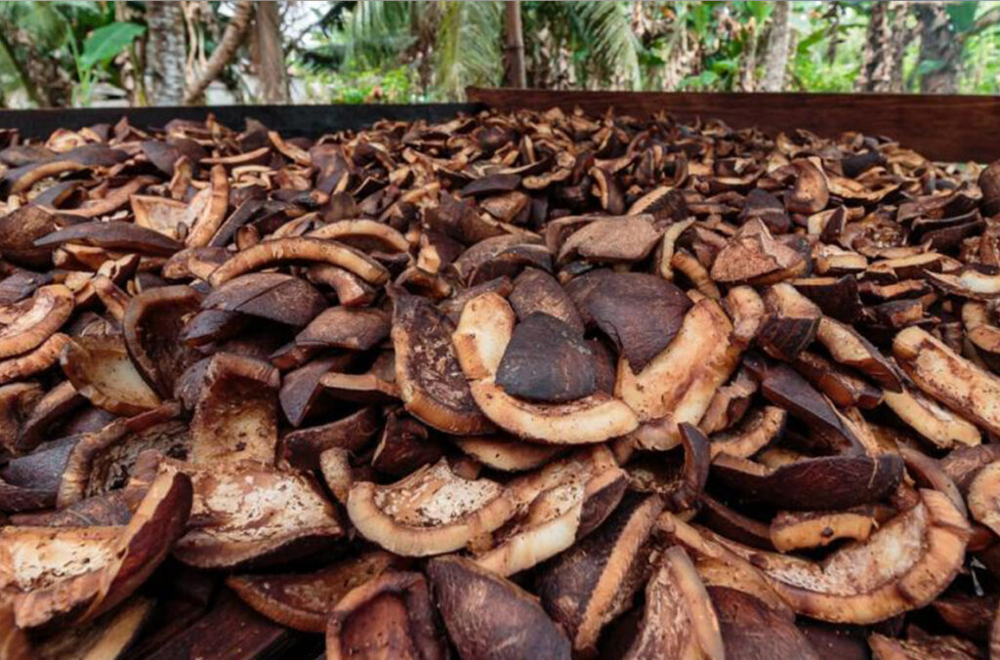
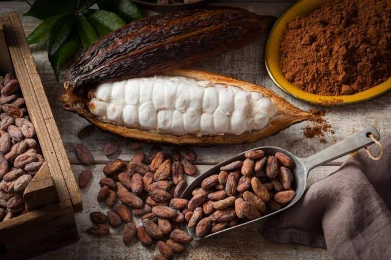
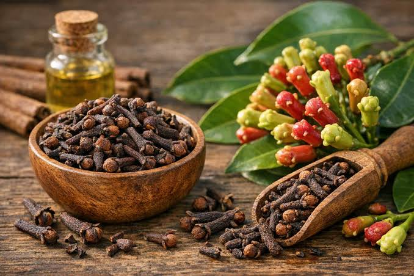
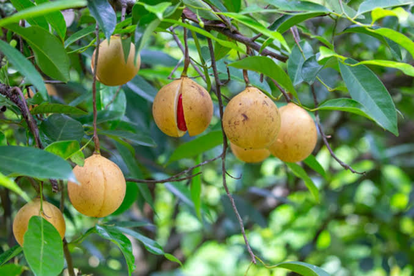
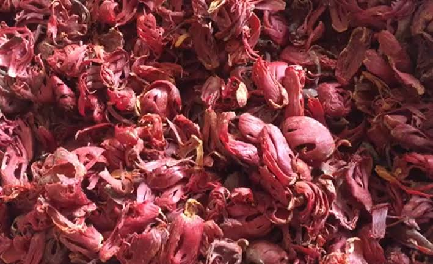

Jenis Komoditas
Halaman ini memperkenalkan lima komoditas perkebunan yang menjadi fokus informasi dalam website ini.

Kopra
Kopra merupakan daging buah kelapa yang dikeringkan dan digunakan terutama sebagai bahan baku minyak kelapa.

Biji Kakao
Biji kakao berasal dari buah kakao dan menjadi bahan baku utama dalam pembuatan cokelat.

Cengkeh
Cengkeh merupakan rempah yang dimanfaatkan dalam industri makanan dan berbagai produk lainnya.

Pala
Pala merupakan rempah yang bijinya digunakan untuk bumbu masakan dan berbagai produk olahan.

Bunga Pala
Bunga pala atau fuli adalah selaput yang menyelimuti biji pala dan juga digunakan sebagai rempah.